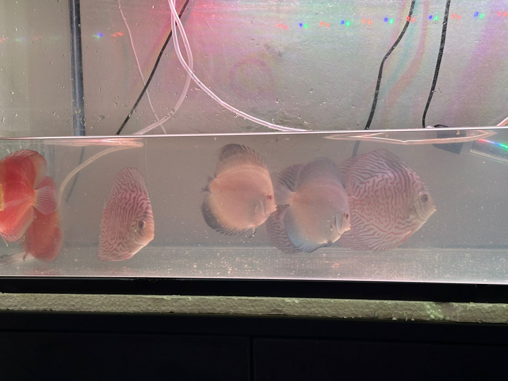
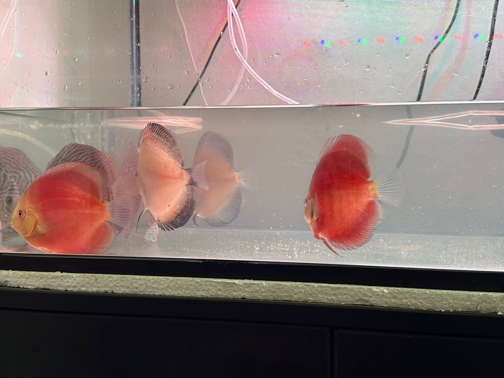
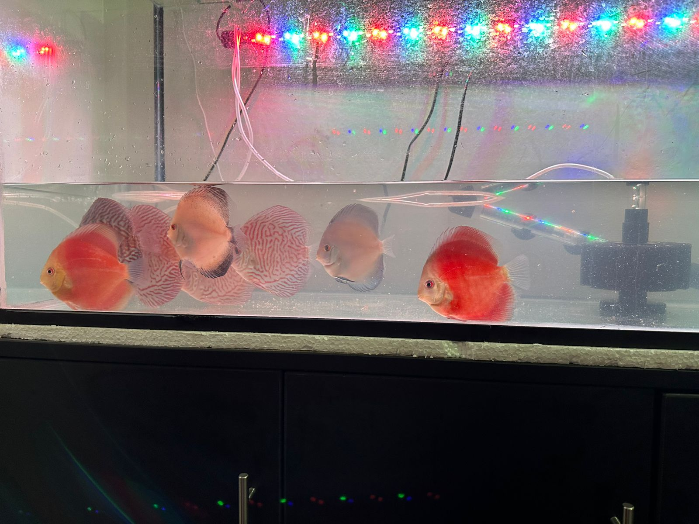

Discus Tiger
Un diseño audaz con franjas intensas que recuerdan la fuerza y la belleza de la naturaleza.
Consultar

Discus Red
La máxima expresión de pasión y vitalidad, con un rojo tan profundo que capturará todas las miradas.
Consultar

Discus Blue Diamond
Un resplandor celestial con un azul tan puro que parece sacado de un sueño. La joya de tu acuario.
Consultar
Discus White
Símbolo de pureza y elegancia atemporal, este pez aporta una serenidad inigualable a cualquier entorno.
Consultar